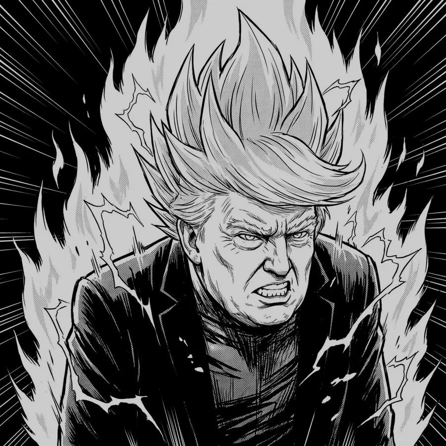
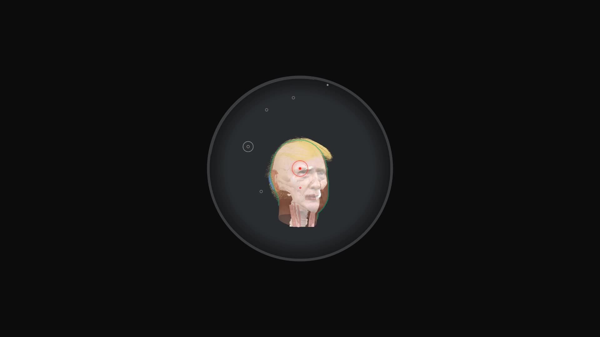
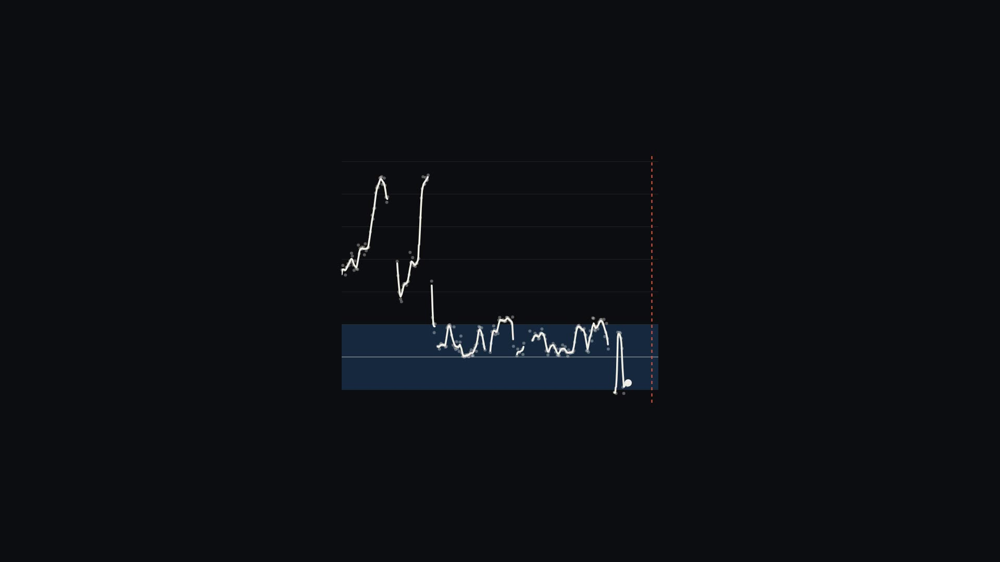
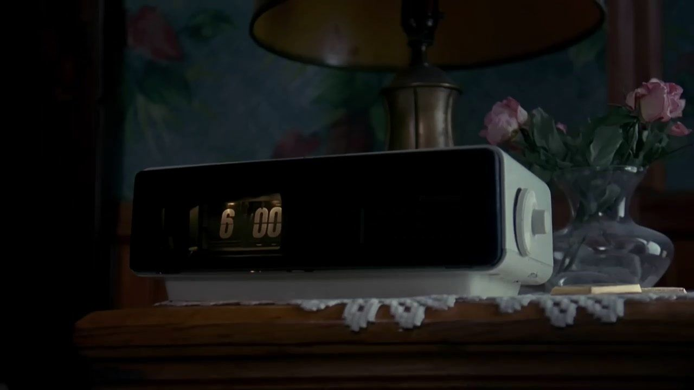

<title>Is Trump Trapped in a Time Loop?</title>
<meta name="claude:viewport-fit-sides" content="cover">
<link rel="preconnect" href="https://fonts.googleapis.com">
<link rel="stylesheet" href="https://fonts.googleapis.com/css2?family=Libre+Franklin:wght@500;600;800;900&family=Newsreader:ital,opsz,wght@0,6..72,400;0,6..72,500;1,6..72,400&family=IBM+Plex+Mono:wght@500&family=Source+Serif+4:opsz,wght@8..60,300;8..60,400&display=swap">
<style>
/* Layout: the argument is the spine. Three text modes take turns:
   BEAT    one or two sentences per screen over a dim photograph (night), after Snow Fall's open and Reuters' Kill Zone captions;
   READ    a single paper column at book measure for the reasoning (Snow Fall's body text);
   OVER    a pinned photograph that passages scroll across (The Guardian's Firestorm).
   Slots mark where a visual section will plug in. One deliberate look: night and paper, no theme switch. */
:root {
  color-scheme: dark;
  --night: #0b0d10;
  --ink-night: #f3efe6;
  --dim-night: #b4afa4;
  --paper: #f7f5f0;
  --ink-paper: #1a1917;
  --dim-paper: #5f5d58;
  --rule-paper: #dedcd5;
  --shot: #e2432a;
  --slot: #c9a227;          /* working marks only; gone in the finished piece */
  --font-head: "Libre Franklin", "Franklin Gothic Medium", "Helvetica Neue", Arial, sans-serif;
  --font-text: "Newsreader", Georgia, "Times New Roman", serif;
  --font-title: "Source Serif 4", Georgia, serif;
  --font-mono: "IBM Plex Mono", ui-monospace, Menlo, monospace;
  --fs-beat: clamp(27px, 3.6vw, 50px);
  --fs-question: clamp(40px, 6.6vw, 104px);
  --fs-read: clamp(21px, .55vw + 16px, 24px);
  --fs-pull: clamp(28px, 3.2vw, 44px);
  --fs-label: clamp(12px, 1vw, 14px);
  --measure: 33rem;
  --ease: cubic-bezier(.2, .8, .2, 1);
}
* { box-sizing: border-box; }
body { margin: 0; background: var(--night); color: var(--ink-night); font-family: var(--font-text); }
.gut { padding-left: max(16px, env(safe-area-inset-left, 0px)); padding-right: max(16px, env(safe-area-inset-right, 0px)); }

/* ---------- BEAT: sentences over a photograph that stays put ---------- */
.beats { position: relative; }
.beats .bg { position: sticky; top: 0; height: 100svh; margin-bottom: -100svh; overflow: hidden; }
.beats .bg img { width: 100%; height: 100%; object-fit: cover; transform: scale(calc(1.04 + var(--p, 0) * .08)); }
.beats .bg .layer { position: absolute; inset: 0; width: 100%; height: 100%; object-fit: cover; opacity: 0; transition: opacity 1.1s var(--ease); }
.beats .bg .layer.on { opacity: 1; }
.beats .bg .layer:first-child { opacity: 1; }
.js .beats .bg .layer:first-child:not(.on) { opacity: 0; }
.beats .bg::after { content: ""; position: absolute; inset: 0; background: radial-gradient(ellipse at 50% 50%, rgba(11,13,16,.35), rgba(11,13,16,.82) 75%); }
.beat { position: relative; min-height: 100svh; display: grid; place-items: center; text-align: center; }
.beat p { margin: 0; max-width: 21em; font-size: var(--fs-beat); line-height: 1.22; text-wrap: balance; text-shadow: 0 2px 24px rgba(0,0,0,.6); }
.beat em { font-style: italic; }
.beat.q p { max-width: 11em; font-size: var(--fs-question); font-weight: 500; line-height: 1.02; letter-spacing: -.015em; }
.beat.short { min-height: 70svh; }


/* ---------- the teaser: a collage of silent loops, no grid ---------- */
.mosaic { position: relative; background: var(--night); overflow: hidden; overflow: clip; }
.collage { position: relative; height: var(--hd); }
.collage::after { content: ""; position: absolute; inset: 0; pointer-events: none; z-index: 20; opacity: .22; mix-blend-mode: overlay; background-image: url("data:image/svg+xml,%3Csvg xmlns='http://www.w3.org/2000/svg' width='160' height='160'%3E%3Cfilter id='n'%3E%3CfeTurbulence type='fractalNoise' baseFrequency='.9' numOctaves='2' stitchTiles='stitch'/%3E%3C/filter%3E%3Crect width='100%25' height='100%25' filter='url(%23n)'/%3E%3C/svg%3E"); }
.collage .c { position: absolute; left: var(--x); top: var(--y); width: var(--w); aspect-ratio: 16 / 9; object-fit: cover; z-index: var(--z); transform: translateY(var(--py-shift, 0px)) rotate(var(--r)); box-shadow: 0 10px 40px rgba(0,0,0,.6); }
.collage .c.strip { aspect-ratio: 16 / 4; }
.collage .c.tall { aspect-ratio: 3 / 4; width: calc(var(--w) * .6); }
.collage .c.wide { aspect-ratio: 21 / 9; }
.collage .c.wash { opacity: .28; box-shadow: none; filter: blur(2px) saturate(.7); }
.collage .c.g { mix-blend-mode: screen; box-shadow: none; z-index: 8; }
.collage .frag { position: absolute; left: var(--x); top: var(--y); z-index: 12; margin: 0; max-width: 16ch; color: #fff; font: 700 clamp(22px, 2.4vw, 40px)/1.05 var(--font-head); letter-spacing: -.01em; transform: translateY(var(--py-shift, 0px)) rotate(var(--r)); text-shadow: 0 2px 18px rgba(0,0,0,.8); }
.collage .frag.xl { font-size: clamp(40px, 6vw, 96px); font-weight: 900; }
.mosaic .final { display: block; width: 100%; aspect-ratio: 16 / 9; object-fit: cover; margin-top: -6vw; position: relative; z-index: 9; -webkit-mask-image: linear-gradient(transparent, #000 18%); mask-image: linear-gradient(transparent, #000 18%); }
@media (max-width: 700px) {
  .collage { height: var(--hp); }
  .collage .c { left: var(--px); top: var(--py); width: var(--pw); }
  .collage .frag { left: var(--px); top: var(--py); }
  .mosaic .final { aspect-ratio: 4 / 5; margin-top: -20vw; }
}

/* ---------- title page (the spine's open screen) ---------- */
.open { position: relative; height: 190svh; background: var(--night); }
.open .pin { position: sticky; top: 0; height: 100svh; overflow: hidden; background: #1b1b1b; }
.open .title { opacity: var(--t, 1); transform: translateY(calc((1 - var(--t, 1)) * 18px)); }
.open img { position: absolute; inset: 0; width: 100%; height: 100%; object-fit: cover; object-position: 30% 0; }
.open .title { position: absolute; right: 4%; top: 15%; width: min(26rem, 32%); text-align: center; color: #fff; }
.open h1 { margin: 0; font: 400 clamp(40px, 4.4vw, 64px)/1.02 var(--font-title); text-wrap: balance; }
.open .sub { margin: .45em 0 0; font: 300 clamp(18px, 1.8vw, 27px)/1.25 var(--font-title); color: rgba(255,255,255,.85); }
.open hr { width: 64px; border: 0; border-top: 2px solid rgba(255,255,255,.8); margin: 22px auto 18px; }
.open .by { margin: 0; font: 500 14px/1 var(--font-head); letter-spacing: .04em; text-transform: uppercase; }
@media (max-aspect-ratio: 4/5) {
  .open img { object-position: 38% 0; }
  .open .pin::after { content: ""; position: absolute; inset: auto 0 0; height: 60%; background: linear-gradient(to top, rgba(10,10,10,.9) 35%, transparent); }
  .open .title { z-index: 1; left: 16px; right: 16px; width: auto; top: auto; bottom: 6svh; }
  .open h1 { font-size: clamp(34px, 9.4vw, 44px); }
}

/* ---------- chapter head ---------- */
.chapter { position: relative; min-height: 100svh; display: grid; place-items: center; text-align: center; overflow: hidden; }
.chapter img { position: absolute; inset: 0; width: 100%; height: 100%; object-fit: cover; opacity: .55; }
.chapter::after { content: ""; position: absolute; inset: 0; background: linear-gradient(transparent 40%, var(--night)); }
.chapter .in { position: relative; z-index: 1; display: grid; gap: 22px; justify-items: center; }
.chapter .clock { font: 900 clamp(72px, 15vw, 220px)/.9 var(--font-head); letter-spacing: -.035em; }
.exhibit h2 { margin: 0; max-width: 12em; font: 900 clamp(52px, 9vw, 140px)/.92 var(--font-head); letter-spacing: -.03em; text-wrap: balance; }
.exhibit .dl { order: -1; }
.chapter .dl { font: 600 var(--fs-label)/1.4 var(--font-head); letter-spacing: .14em; text-transform: uppercase; color: var(--dim-night); }

/* ---------- READ: the paper column ---------- */
.read { background: var(--paper); color: var(--ink-paper); padding-block: clamp(72px, 14vh, 160px); }
.read .col { max-width: var(--measure); margin: 0 auto; display: grid; gap: 1.05em; font-size: var(--fs-read); line-height: 1.62; }
.read p { margin: 0; hanging-punctuation: first; }
.read .lead::first-letter { float: left; font: 500 4.35em/.78 var(--font-text); margin: .08em .08em 0 -.03em; color: var(--ink-paper); }
.read .kick { font: 600 var(--fs-label)/1.4 var(--font-head); letter-spacing: .14em; text-transform: uppercase; color: var(--dim-paper); }
.read .pull { margin: 1.2em 0; padding-block: .9em; border-block: 1px solid var(--rule-paper); font-size: var(--fs-pull); line-height: 1.18; text-wrap: balance; letter-spacing: -.01em; }
.read .pull + p { margin-top: 0; }
.read .gap { height: clamp(36px, 8vh, 80px); }

/* ---------- OVER: passages scroll across a pinned photograph ---------- */
.over { position: relative; }
.over .bg { position: sticky; top: 0; height: 100svh; margin-bottom: -100svh; overflow: hidden; }
.over .bg img { width: 100%; height: 100%; object-fit: cover; object-position: 62% 30%; }
.over .bg::after { content: ""; position: absolute; inset: 0; background: linear-gradient(90deg, rgba(11,13,16,.92) 0%, rgba(11,13,16,.7) 38%, rgba(11,13,16,0) 70%); }
.over .step { position: relative; min-height: 95svh; display: flex; align-items: center; }
.over .step:first-of-type { min-height: 100svh; }
.over .step p { margin: 0 0 0 clamp(0px, 6vw, 110px); max-width: 17em; font-size: clamp(23px, 2.1vw, 32px); line-height: 1.32; text-shadow: 0 1px 18px rgba(0,0,0,.7); }
@media (max-width: 700px) {
  .over .bg img { object-position: 70% 30%; }
  .over .bg::after { background: linear-gradient(rgba(11,13,16,.25), rgba(11,13,16,.85) 55%, rgba(11,13,16,.92)); }
  .over .step { align-items: flex-end; padding-bottom: 14svh; }
  .over .step p { margin: 0; }
}

/* ---------- slots: working marks for Sam ---------- */
.slot { position: relative; min-height: 80svh; display: grid; place-items: center; overflow: hidden; border-block: 1px dashed color-mix(in srgb, var(--slot) 60%, transparent); }
.slot > img { position: absolute; inset: 0; width: 100%; height: 100%; object-fit: cover; opacity: .32; }
.slot .note { position: relative; max-width: 34rem; display: grid; gap: 12px; padding-block: 48px; }
.slot .tag { justify-self: start; font: 700 12px/1 var(--font-head); letter-spacing: .14em; text-transform: uppercase; color: var(--night); background: var(--slot); padding: 6px 9px 5px; }
.slot h3 { margin: 0; font: 800 clamp(22px, 2.4vw, 30px)/1.15 var(--font-head); color: var(--ink-night); text-wrap: balance; }
.slot p { margin: 0; font: 400 clamp(17px, 1.3vw, 19px)/1.5 var(--font-text); color: var(--dim-night); }
.slot .yours { color: var(--ink-night); font-style: italic; }
.slot.paper { background: var(--paper); border-color: var(--slot); }
.slot.paper h3 { color: var(--ink-paper); }
.slot.paper p { color: var(--dim-paper); }
.slot.paper .yours { color: var(--ink-paper); }

/* the denominator sketch, inside its slot */
.denom { position: relative; background: var(--paper); color: var(--ink-paper); padding-block: clamp(64px, 12vh, 140px); border-block: 1px dashed var(--slot); }
.denom .in { max-width: 72rem; margin: 0 auto; display: grid; gap: 28px; }
.denom .tag { justify-self: start; font: 700 12px/1 var(--font-head); letter-spacing: .14em; text-transform: uppercase; color: var(--night); background: var(--slot); padding: 6px 9px 5px; }
.denom .one { font: 600 var(--fs-label)/1 var(--font-head); letter-spacing: .14em; text-transform: uppercase; color: var(--dim-paper); }
.denom .n { font: 500 clamp(24px, 5.6vw, 88px)/1.08 var(--font-mono); letter-spacing: -.03em; font-variant-numeric: tabular-nums; }
.denom .n span { opacity: var(--o, 1); transition: opacity .4s var(--ease); }
.denom .cap { max-width: var(--measure); font-size: var(--fs-read); line-height: 1.5; color: var(--dim-paper); margin: 0; }

.end { min-height: 60svh; display: grid; place-items: center; text-align: center; }
.end p { margin: 0; font: 600 var(--fs-label)/1.6 var(--font-head); letter-spacing: .14em; text-transform: uppercase; color: var(--dim-night); }

/* the opening lines sit on moving pictures; keep them dim enough to read */
.beats .bg video.layer { filter: brightness(.8); }

/* scroll fades: only when the script runs, and never for readers who ask for less motion */
.js .fade { opacity: var(--a, 1); transform: translateY(calc((1 - var(--a, 1)) * 14px)); will-change: opacity, transform; }
@media (prefers-reduced-motion: reduce) { .js .fade { opacity: 1; transform: none; } .beats .bg img { transform: none; } }
:focus-visible { outline: 2px solid var(--slot); outline-offset: 3px; }
</style>

<!-- 1. COLD OPEN: Sam's five opening lines, one per screen -->
<section class="beats" id="cold-open" aria-label="Opening">
  <div class="bg" aria-hidden="true"><video class="layer" data-i="0" muted loop playsinline preload="auto" poster="vid/reporter.jpg" style="object-position:56% 30%"><source src="vid/reporter.webm" type="video/webm"><source src="vid/reporter.mp4" type="video/mp4"></video><video class="layer" data-i="1" muted loop playsinline preload="auto" poster="vid/tape.jpg" style="object-position:50% 30%"><source src="vid/tape.webm" type="video/webm"><source src="vid/tape.mp4" type="video/mp4"></video><video class="layer" data-i="2" muted loop playsinline preload="auto" poster="vid/dogs.jpg" style="object-position:50% 30%"><source src="vid/dogs.webm" type="video/webm"><source src="vid/dogs.mp4" type="video/mp4"></video></div>
  <div class="beat gut" data-bg="0"><p class="fade">Donald Trump has earned the nickname &ldquo;Teflon Don&rdquo; for his ability to overcome gaffs and scandals that would sink most political careers.</p></div>
  <div class="beat gut" data-bg="1"><p class="fade">Critics bemoan this ability with disbelief. How can someone succeed while making so many mistakes by the traditional rules of politics?</p></div>
  <div class="beat gut" data-bg="2"><p class="fade">But maybe this ability isn&rsquo;t a personality trait. Or the result of good luck.</p></div>
</section>

<!-- 1b. THE TEASER: a collage after Adam Curtis; clips, the piece's own animations and stray words overlap with no grid, as if falling down a rabbit hole. It scrolls like any page; the layers drift at slightly different speeds. -->
<section class="mosaic" id="mosaic" aria-label="The loop, in clips" style="--hd:299vw;--hp:560vw">
  <div class="collage" aria-hidden="true">
    <video class="c wash" style="--x:10vw;--y:249vw;--w:120vw;--px:-30vw;--py:467vw;--pw:160vw;--r:0deg;--d:-.3;--z:0" muted loop playsinline preload="none" poster="m2/tarmac-wake.jpg" src="m2/tarmac-wake.mp4"></video>
    <video class="c wash" style="--x:4vw;--y:199vw;--w:120vw;--px:-30vw;--py:374vw;--pw:160vw;--r:0deg;--d:-.3;--z:0" muted loop playsinline preload="none" poster="m2/electro-grandrapids.jpg" src="m2/electro-grandrapids.mp4"></video>
    <video class="c wash" style="--x:-12vw;--y:150vw;--w:120vw;--px:-30vw;--py:280vw;--pw:160vw;--r:0deg;--d:-.3;--z:0" muted loop playsinline preload="none" poster="m2/alarm-late.jpg" src="m2/alarm-late.mp4"></video>
    <video class="c wash" style="--x:0vw;--y:100vw;--w:120vw;--px:-30vw;--py:187vw;--pw:160vw;--r:0deg;--d:-.3;--z:0" muted loop playsinline preload="none" poster="m2/own-rules.jpg" src="m2/own-rules.mp4"></video>
    <video class="c wash" style="--x:-7vw;--y:50vw;--w:120vw;--px:-30vw;--py:93vw;--pw:160vw;--r:0deg;--d:-.3;--z:0" muted loop playsinline preload="none" poster="m2/ned-day2.jpg" src="m2/ned-day2.mp4"></video>
    <video class="c wash" style="--x:-14vw;--y:0vw;--w:120vw;--px:-30vw;--py:0vw;--pw:160vw;--r:0deg;--d:-.3;--z:0" muted loop playsinline preload="none" poster="m2/gfx-flyover.jpg" src="m2/gfx-flyover.mp4"></video>
    <video class="c tall" style="--x:63.3vw;--y:3.0vw;--w:26vw;--px:3.4vw;--py:6.0vw;--pw:38vw;--r:-2.4deg;--d:0.08;--z:2" muted loop playsinline preload="none" poster="m2/wake-2.jpg" src="m2/wake-2.mp4"></video>
    <video class="c" style="--x:22.3vw;--y:10.6vw;--w:46vw;--px:29.2vw;--py:17.3vw;--pw:67vw;--r:-0.6deg;--d:-0.08;--z:3" muted loop playsinline preload="none" poster="m2/daze-cabinet.jpg" src="m2/daze-cabinet.mp4"></video>
    <video class="c g" style="--x:-0.4vw;--y:17.2vw;--w:30vw;--px:50.2vw;--py:30.8vw;--pw:44vw;--r:0.6deg;--d:-0.16;--z:4" muted loop playsinline preload="none" poster="m2/gfx-sight-shots.jpg" src="m2/gfx-sight-shots.mp4"></video>
    <video class="c wide" style="--x:6.1vw;--y:22.8vw;--w:52vw;--px:15.0vw;--py:44.0vw;--pw:75vw;--r:0deg;--d:0.04;--z:3" muted loop playsinline preload="none" poster="m2/clock-flip-b.jpg" src="m2/clock-flip-b.mp4"></video>
    <p class="frag xl" style="--x:22.3vw;--y:31.3vw;--px:7.1vw;--py:61.3vw;--r:-3.1deg;--d:-0.1">6:00</p>
    <video class="c" style="--x:14.4vw;--y:30.3vw;--w:34vw;--px:7.2vw;--py:57.3vw;--pw:49vw;--r:0.6deg;--d:0.0;--z:2" muted loop playsinline preload="none" poster="m2/electro-vegas.jpg" src="m2/electro-vegas.mp4"></video>
    <video class="c tall" style="--x:41.1vw;--y:36.6vw;--w:34vw;--px:1.2vw;--py:70.5vw;--pw:49vw;--r:0deg;--d:0.11;--z:5" muted loop playsinline preload="none" poster="m2/ned-day1.jpg" src="m2/ned-day1.mp4"></video>
    <p class="frag xl" style="--x:69.2vw;--y:44.3vw;--px:31.2vw;--py:86.5vw;--r:0deg;--d:-0.01">Again.</p>
    <video class="c g" style="--x:19.8vw;--y:43.3vw;--w:38vw;--px:14.9vw;--py:82.5vw;--pw:55vw;--r:0deg;--d:0.14;--z:5" muted loop playsinline preload="none" poster="m2/gfx-skull-path.jpg" src="m2/gfx-skull-path.mp4"></video>
    <video class="c wide" style="--x:43.4vw;--y:49.6vw;--w:40vw;--px:0.1vw;--py:95.3vw;--pw:58vw;--r:0deg;--d:0.2;--z:7" muted loop playsinline preload="none" poster="m2/fifth-avenue.jpg" src="m2/fifth-avenue.mp4"></video>
    <video class="c" style="--x:17.6vw;--y:54.8vw;--w:52vw;--px:17.7vw;--py:108.7vw;--pw:75vw;--r:0deg;--d:-0.0;--z:5" muted loop playsinline preload="none" poster="m2/no-tomorrow.jpg" src="m2/no-tomorrow.mp4"></video>
    <p class="frag l" style="--x:23.7vw;--y:63.3vw;--px:6.8vw;--py:126.4vw;--r:-2.0deg;--d:-0.07">No consequences</p>
    <video class="c" style="--x:31.0vw;--y:62.3vw;--w:30vw;--px:31.1vw;--py:122.4vw;--pw:44vw;--r:0deg;--d:0.02;--z:5" muted loop playsinline preload="none" poster="m2/shove.jpg" src="m2/shove.mp4"></video>
    <video class="c" style="--x:7.8vw;--y:69.7vw;--w:30vw;--px:7.9vw;--py:134.1vw;--pw:44vw;--r:-1.0deg;--d:0.17;--z:7" muted loop playsinline preload="none" poster="m2/own-rules.jpg" src="m2/own-rules.mp4"></video>
    <video class="c g" style="--x:7.4vw;--y:74.7vw;--w:30vw;--px:30.1vw;--py:147.0vw;--pw:44vw;--r:0deg;--d:-0.07;--z:6" muted loop playsinline preload="none" poster="m2/gfx-head-turn.jpg" src="m2/gfx-head-turn.mp4"></video>
    <video class="c strip" style="--x:36.6vw;--y:80.9vw;--w:46vw;--px:25.9vw;--py:162.7vw;--pw:67vw;--r:0deg;--d:0.03;--z:7" muted loop playsinline preload="none" poster="m2/didnt-sleep.jpg" src="m2/didnt-sleep.mp4"></video>
    <video class="c strip" style="--x:11.6vw;--y:88.1vw;--w:26vw;--px:64.0vw;--py:175.0vw;--pw:38vw;--r:-2.8deg;--d:0.07;--z:3" muted loop playsinline preload="none" poster="m2/wake-1.jpg" src="m2/wake-1.mp4"></video>
    <p class="frag xl" style="--x:68.9vw;--y:95.6vw;--px:39.8vw;--py:192.6vw;--r:0.5deg;--d:0.03">Ennui</p>
    <video class="c" style="--x:10.1vw;--y:94.6vw;--w:52vw;--px:7.8vw;--py:188.6vw;--pw:75vw;--r:-2.0deg;--d:-0.03;--z:5" muted loop playsinline preload="none" poster="m2/gaffe-dogs.jpg" src="m2/gaffe-dogs.mp4"></video>
    <video class="c g" style="--x:17.8vw;--y:99.0vw;--w:38vw;--px:4.3vw;--py:203.7vw;--pw:55vw;--r:0deg;--d:0.01;--z:7" muted loop playsinline preload="none" poster="m2/gfx-word-990.jpg" src="m2/gfx-word-990.mp4"></video>
    <video class="c" style="--x:12.8vw;--y:104.4vw;--w:26vw;--px:61.7vw;--py:215.3vw;--pw:38vw;--r:0deg;--d:-0.12;--z:3" muted loop playsinline preload="none" poster="m2/electro-grandrapids.jpg" src="m2/electro-grandrapids.mp4"></video>
    <video class="c" style="--x:44.3vw;--y:111.2vw;--w:52vw;--px:18.6vw;--py:230.8vw;--pw:75vw;--r:0deg;--d:-0.06;--z:6" muted loop playsinline preload="none" poster="m2/ned-day2.jpg" src="m2/ned-day2.mp4"></video>
    <p class="frag xl" style="--x:24.7vw;--y:119.6vw;--px:6.0vw;--py:245.8vw;--r:0deg;--d:0.03">Again.</p>
    <video class="c strip" style="--x:5.4vw;--y:118.6vw;--w:60vw;--px:1.5vw;--py:241.8vw;--pw:87vw;--r:2.2deg;--d:0.21;--z:7" muted loop playsinline preload="none" poster="m2/find-me.jpg" src="m2/find-me.mp4"></video>
    <video class="c g" style="--x:29.1vw;--y:125.9vw;--w:38vw;--px:6.9vw;--py:253.0vw;--pw:55vw;--r:1.6deg;--d:0.22;--z:6" muted loop playsinline preload="none" poster="m2/gfx-close-gap.jpg" src="m2/gfx-close-gap.mp4"></video>
    <video class="c strip" style="--x:2.0vw;--y:133.7vw;--w:34vw;--px:2.8vw;--py:265.7vw;--pw:49vw;--r:0deg;--d:0.22;--z:3" muted loop playsinline preload="none" poster="m2/never-seen.jpg" src="m2/never-seen.mp4"></video>
    <video class="c wide" style="--x:35.3vw;--y:139.0vw;--w:26vw;--px:41.4vw;--py:278.6vw;--pw:38vw;--r:0deg;--d:0.06;--z:2" muted loop playsinline preload="none" poster="m2/wake-4.jpg" src="m2/wake-4.mp4"></video>
    <video class="c" style="--x:29.8vw;--y:146.4vw;--w:30vw;--px:36.4vw;--py:289.3vw;--pw:44vw;--r:1.5deg;--d:-0.1;--z:7" muted loop playsinline preload="none" poster="m2/gaffe-tape.jpg" src="m2/gaffe-tape.mp4"></video>
    <video class="c g" style="--x:73.5vw;--y:152.0vw;--w:30vw;--px:-1.3vw;--py:301.7vw;--pw:44vw;--r:0deg;--d:0.11;--z:6" muted loop playsinline preload="none" poster="m2/gfx-facemap.jpg" src="m2/gfx-facemap.mp4"></video>
    <p class="frag xl" style="--x:62.5vw;--y:162.6vw;--px:35.6vw;--py:320.6vw;--r:2.3deg;--d:0.21">1 in 990</p>
    <video class="c" style="--x:32.4vw;--y:161.6vw;--w:52vw;--px:13.3vw;--py:316.6vw;--pw:75vw;--r:-2.6deg;--d:-0.17;--z:5" muted loop playsinline preload="none" poster="m2/electro-anaheim.jpg" src="m2/electro-anaheim.mp4"></video>
    <video class="c tall" style="--x:18.9vw;--y:169.5vw;--w:30vw;--px:11.9vw;--py:327.7vw;--pw:44vw;--r:0deg;--d:-0.17;--z:4" muted loop playsinline preload="none" poster="m2/forecast.jpg" src="m2/forecast.mp4"></video>
    <video class="c g" style="--x:42.4vw;--y:174.6vw;--w:38vw;--px:38.6vw;--py:340.2vw;--pw:55vw;--r:2.9deg;--d:-0.04;--z:6" muted loop playsinline preload="none" poster="m2/gfx-margin-path.jpg" src="m2/gfx-margin-path.mp4"></video>
    <video class="c tall" style="--x:67.6vw;--y:180.2vw;--w:26vw;--px:49.8vw;--py:355.8vw;--pw:38vw;--r:0.2deg;--d:0.03;--z:2" muted loop playsinline preload="none" poster="m2/daze-coal.jpg" src="m2/daze-coal.mp4"></video>
    <video class="c tall" style="--x:22.7vw;--y:187.3vw;--w:26vw;--px:32.2vw;--py:366.7vw;--pw:38vw;--r:0.8deg;--d:-0.13;--z:5" muted loop playsinline preload="none" poster="m2/alarm-late.jpg" src="m2/alarm-late.mp4"></video>
    <p class="frag l" style="--x:12.6vw;--y:197.5vw;--px:11.3vw;--py:381.3vw;--r:0deg;--d:-0.08">Bizarre disregard for social norms</p>
    <video class="c tall" style="--x:32.3vw;--y:196.5vw;--w:26vw;--px:38.7vw;--py:377.3vw;--pw:38vw;--r:0.4deg;--d:0.12;--z:6" muted loop playsinline preload="none" poster="m2/gfx-flyover.jpg" src="m2/gfx-flyover.mp4"></video>
    <video class="c" style="--x:50.5vw;--y:202.5vw;--w:30vw;--px:51.3vw;--py:391.4vw;--pw:44vw;--r:0.2deg;--d:0.01;--z:6" muted loop playsinline preload="none" poster="m2/tarmac-wake.jpg" src="m2/tarmac-wake.mp4"></video>
    <video class="c" style="--x:1.4vw;--y:210.1vw;--w:34vw;--px:10.7vw;--py:402.7vw;--pw:49vw;--r:-0.6deg;--d:-0.02;--z:3" muted loop playsinline preload="none" poster="m2/gaffe-reporter.jpg" src="m2/gaffe-reporter.mp4"></video>
    <video class="c g" style="--x:35.9vw;--y:216.8vw;--w:46vw;--px:11.3vw;--py:417.4vw;--pw:67vw;--r:0deg;--d:-0.12;--z:4" muted loop playsinline preload="none" poster="m2/gfx-turn-fire.jpg" src="m2/gfx-turn-fire.mp4"></video>
    <video class="c" style="--x:7.1vw;--y:224.3vw;--w:40vw;--px:29.1vw;--py:433.2vw;--pw:58vw;--r:3.2deg;--d:-0.02;--z:3" muted loop playsinline preload="none" poster="m2/electro-ankeny.jpg" src="m2/electro-ankeny.mp4"></video>
    <p class="frag xl" style="--x:50.0vw;--y:234.1vw;--px:35.9vw;--py:453.1vw;--r:-0.6deg;--d:-0.04">Again.</p>
    <video class="c g" style="--x:19.2vw;--y:233.1vw;--w:38vw;--px:28.8vw;--py:449.1vw;--pw:55vw;--r:-0.3deg;--d:0.1;--z:6" muted loop playsinline preload="none" poster="m2/gfx-loops.jpg" src="m2/gfx-loops.mp4"></video>
    <video class="c" style="--x:2.9vw;--y:241.0vw;--w:26vw;--px:15.5vw;--py:459.8vw;--pw:38vw;--r:0deg;--d:-0.09;--z:4" muted loop playsinline preload="none" poster="m2/wake-5.jpg" src="m2/wake-5.mp4"></video>
    <video class="c g" style="--x:24.4vw;--y:248.0vw;--w:38vw;--px:24.4vw;--py:474.7vw;--pw:55vw;--r:0deg;--d:0.09;--z:6" muted loop playsinline preload="none" poster="m2/gfx-crowd-beat.jpg" src="m2/gfx-crowd-beat.mp4"></video>
    <p class="frag l" style="--x:16.2vw;--y:257.3vw;--px:2.9vw;--py:492.9vw;--r:-3.1deg;--d:0.1">Death holds no fear</p>
    <video class="c g" style="--x:1.9vw;--y:256.3vw;--w:38vw;--px:40.7vw;--py:488.9vw;--pw:55vw;--r:0deg;--d:0.07;--z:2" muted loop playsinline preload="none" poster="m2/gfx-chart-scrub.jpg" src="m2/gfx-chart-scrub.mp4"></video>
    <video class="c wide" style="--x:42.0vw;--y:261.3vw;--w:34vw;--px:-0.5vw;--py:499.7vw;--pw:49vw;--r:3.5deg;--d:-0.01;--z:3" muted loop playsinline preload="none" poster="m2/gfx-whiteout-cut.jpg" src="m2/gfx-whiteout-cut.mp4"></video>
    <p class="frag l" style="--x:61.8vw;--y:272.1vw;--px:38.5vw;--py:519.5vw;--r:-2.2deg;--d:0.19">July 13, 2024</p>
  </div>
  <video class="final" muted loop playsinline preload="none" poster="m2/butler-speech.jpg" src="m2/butler-speech.mp4" aria-hidden="true"></video>
</section>

<!-- 2. TITLE PAGE: the spine's open screen, the last picture of the montage; the title fades in over it -->
<header class="open" aria-label="Title">
  <div class="pin">
  
  <div class="title">
    <h1>Is Trump Trapped in a Time Loop?</h1>
    <p class="sub">A Pulitzer-worthy analysis</p>
    <hr>
    <p class="by">By Sam Kemmis</p>
  </div>
  </div>
</header>

<!-- 3. CHAPTER: 6:11pm -->
<section class="chapter gut" aria-label="Chapter: 6:11pm">
  
  <div class="in">
    <div class="clock fade">6:11pm</div>
    <div class="dl fade">Butler, Pennsylvania &middot; July 13, 2024</div>
  </div>
</section>
<section aria-label="The odds">
  <div class="beat gut short"><p class="fade">The odds of any particular series of events happening is remote.</p></div>
</section>

<!-- READ: the coin -->
<section class="read gut" aria-label="The coin">
  <div class="col">
    <p class="lead">If you flip a coin 100 times, the chances that any particular outcome actually occurs is tiny. Even seemingly random outcomes, like alternating heads and tails throughout the 100-flip sequence, are extremely unlikely. If all 8 billion people on Earth flipped a 100-coin sequence every single second, it would take roughly 2.5 trillion years for someone to (probably) achieve a perfect head/tail/head sequence through all 100 flips.</p>
  </div>
</section>

<!-- slot: the denominator, sketched in type -->
<section class="denom gut" aria-label="Slot: the denominator">
  <div class="in">
    <span class="tag">Slot &middot; proposal sketch</span>
    <div class="one">The chance of a perfect head/tail/head sequence in 100 flips</div>
    <div class="n" id="denom" aria-label="1 in 633,825,300,114,114,700,748,351,602,688">1 in <span>633,825,300,114,114,700,748,351,602,688</span></div>
    <p class="cap">Your note asked for a visual of how big the denominator is. This sketch writes the number out in full, digit by digit, as the reader scrolls: 1 in 633.8 octillion. A second step could set it against 8 billion people flipping every second for 2.5 trillion years. I checked both of your numbers and both hold.</p>
  </div>
</section>

<!-- READ: what scientists ask -->
<section class="read gut" aria-label="What scientists ask">
  <div class="col">
    <p>To account for this randomness, scientists focus their attention on outcomes that match a particular hypothesis. When testing a new drug, for example, they test the hypothesis that the drug has the effect they predict. If the odds of the outcome their predict happening by chance exceeds a certain threshold &mdash; usually 5% or 1% &mdash; it is deemed &ldquo;statistically significant.&rdquo; That is, it supports their hypothesis.</p>
    <p class="pull">Scientists aren&rsquo;t just asking &ldquo;did something unusual happen?&rdquo; They are asking &ldquo;did something unusual happen that supports our theory?&rdquo;</p>
  </div>
</section>

<section class="slot gut" aria-label="Slot: the opening">
  
  <div class="note">
    <span class="tag">Slot &middot; the opening</span>
    <h3>Butler, 6:11 p.m.: the speech and the shot</h3>
    <p class="yours">Your note: begin infographics, probably starting with Trump&rsquo;s speech, but we might break it up to include this narrative.</p>
    <p>Proposal: the existing opening plays here unchanged.</p>
  </div>
</section>

<!-- EXHIBIT A -->
<section class="chapter exhibit gut" aria-label="Exhibit A: The Theory">
  
  <div class="in">
    <div class="dl fade">Exhibit A</div>
    <h2 class="fade">The Theory</h2>
  </div>
</section>
<section class="read gut" aria-label="The theory">
  <div class="col">
    <p class="lead">Here&rsquo;s the theory: Donald Trump has been trapped in a series of loops. He can only escape the loops to achieving some difficult and unlikely outcome, like winning the presidency.</p>
    <p>Each loop is like a video game level: If he fails, he starts over again. This repeated &ldquo;practice&rdquo; grants him superhuman abilities, like a video game speedrunner.</p>
  </div>
</section>
<section class="slot gut" aria-label="Slot: The Loops">
  
  <div class="note">
    <span class="tag">Slot &middot; time-loop infographic</span>
    <h3>The Loops: his coils rise while our line runs straight</h3>
    <p class="yours">Your note: time loop infographic.</p>
    <p>Proposal: The Loops plays here, the timeline where each failed loop leaves him higher, ending on &ldquo;President of the United States&rdquo;. It currently closes the piece.</p>
  </div>
</section>

<!-- EXHIBIT B -->
<section class="chapter exhibit gut" aria-label="Exhibit B: The Shot">
  
  <div class="in">
    <div class="dl fade">Exhibit B</div>
    <h2 class="fade">The Shot</h2>
  </div>
</section>
<section class="over" aria-label="The shot">
  <div class="bg" aria-hidden="true"></div>
  <div class="step gut"><p class="fade">Donald Trump was shot in the ear at a campaign rally on July 13, 2024.</p></div>
  <div class="step gut"><p class="fade">On its own, this was just another freak outcome. But this outcome is interesting not just because it was unlikely. All outcomes are unlikely. It&rsquo;s interesting because it was the only outcome that would benefit Trump.</p></div>
</section>
<section class="slot gut" aria-label="Slot: The Ear by Area">
  
  <div class="note">
    <span class="tag">Slot &middot; The Ear by Area</span>
    <h3>The face map, ending on &ldquo;benefits Trump&rdquo;</h3>
    <p class="yours">Your note: the head-by-area graph, but at the end we break down the odds by &ldquo;benefits Trump&rdquo; (ear shot) and &ldquo;doesn&rsquo;t benefit Trump&rdquo; (everything else).</p>
    <p>Proposal: the existing page plays unchanged, then one added last screen merges its three outcomes into two. By area, the ear is 1.5% of the target and everything else is 98.5%. The face-map thread would build that screen after your yes.</p>
  </div>
</section>

<section class="over" aria-label="The turn">
  <div class="bg" aria-hidden="true"></div>
  <div class="step gut"><p class="fade">He knew a shot was coming, and positioned his head at exactly the right moment for maximum ear exposure.</p></div>
</section>
<section class="slot gut" aria-label="Slot: the turn">
  
  <div class="note">
    <span class="tag">Slot &middot; the turn</span>
    <h3>The head turn toward the rifle</h3>
    <p class="yours">Your note: the turn infographic.</p>
    <p>Proposal: The chart minute plays here, showing his face turned within 35 degrees of the rifle 96% of the time in the last 51 seconds. Moving Target, where the reader fires while he turns, could follow it or replace it.</p>
  </div>
</section>

<section class="read gut" aria-label="Did it help">
  <div class="col">
    <p class="lead">Did getting shot in the ear help his candidacy? Yes, his odds of winning jumped more after the shooting than any other event that year, including Biden&rsquo;s disastrous debate performance.</p>
  </div>
</section>
<section class="slot gut" aria-label="Slot: The Bump">
  
  <div class="note">
    <span class="tag">Slot &middot; Polymarket</span>
    <h3>The Bump: the betting odds after Butler</h3>
    <p class="yours">Your note: infographic on polymarket odds.</p>
    <p>Proposal: The Bump plays here unchanged: Trump rose 10 points in five hours and was still 9 points up a day later, while the debate&rsquo;s 7-point spike faded by morning.</p>
  </div>
</section>

<!-- EXHIBIT C -->
<section class="chapter exhibit gut" aria-label="Exhibit C: The Behavior">
  
  <div class="in">
    <div class="dl fade">Exhibit C</div>
    <h2 class="fade">The Behavior</h2>
  </div>
</section>
<section class="read gut" aria-label="The behavior">
  <div class="col">
    <p class="lead">Movies about time loops follow the protagonist as they devolve into psychosis and nihilism. But we&rsquo;re watching him at the end of this process.</p>
    <p>Trump&rsquo;s bizarre personality and behavior is perhaps the strongest evidence supporting the theory. He seems to have no regard for the consequences of his actions because, like a video game character repeating the same level, he knows it actually doesn&rsquo;t matter.</p>
  </div>
</section>
<section class="slot gut" aria-label="Slot: The Loop Hypothesis">
  
  <div class="note">
    <span class="tag">Slot &middot; &ldquo;What does a man&rdquo;</span>
    <h3>What does a man stuck in a time loop look like?</h3>
    <p class="yours">Your note: &ldquo;what does a man&rdquo; section.</p>
    <p>Proposal: the question card, then The Loop Hypothesis cork board with its five exhibits, unchanged.</p>
  </div>
</section>

<!-- CONCLUSION -->
<section class="chapter exhibit gut" aria-label="Conclusion">
  <div class="in">
    <div class="dl fade">Conclusion</div>
    <h2 class="fade">Is there anything we can do?</h2>
  </div>
</section>
<section class="end gut"><p>Your conclusion goes here</p></section>

<script>
document.documentElement.classList.add('js');
const reduce = matchMedia('(prefers-reduced-motion: reduce)').matches;
const fades = [...document.querySelectorAll('.fade')];
const open = document.getElementById('cold-open');
const layers = [...open.querySelectorAll('.layer')], beats = [...open.querySelectorAll('[data-bg]')];
let shown = -1;
const hero = document.querySelector('.open'), mosaic = document.getElementById('mosaic');
// each clip plays only while it is on screen
const io = new IntersectionObserver(es => es.forEach(e => { const v = e.target; if (e.isIntersecting && !reduce) { v.preload = 'auto'; v.play().catch(() => {}); } else v.pause(); }), { rootMargin: '25% 0px' });
document.querySelectorAll('.mosaic video').forEach(v => io.observe(v));
const layersC = [...document.querySelectorAll('.collage .c, .collage .frag')];
const digits = document.querySelector('#denom span');
const full = digits.textContent;
let ticking = false;
function frame() {
  ticking = false;
  const vh = innerHeight;
  if (!reduce) for (const el of fades) {
    const r = el.getBoundingClientRect();
    const d = Math.abs((r.top + r.height / 2) - vh / 2) / (vh * .5);   // 0 at the screen's centre, 1 at its edge
    el.style.setProperty('--a', Math.max(0, Math.min(1, 1.5 - d * 1.5)).toFixed(3));
  }
  // the collage's pieces drift at slightly different speeds, so it reads as depth rather than a page of tiles
  if (!reduce) { const cr = mosaic.getBoundingClientRect(); if (cr.top < vh && cr.bottom > 0) { const c = vh / 2 - (cr.top + cr.height / 2); layersC.forEach(el => el.style.setProperty('--py-shift', (c * el.style.getPropertyValue('--d')).toFixed(1) + 'px')); } }
  // the title fades in once the fist photo has filled the screen
  const hr = hero.getBoundingClientRect();
  hero.style.setProperty('--t', reduce ? 1 : Math.max(0, Math.min(1, -hr.top / (vh * .55))).toFixed(3));
  // the cold open's photograph drifts in slowly, then dissolves to the clock for the time-loop lines
  const or = open.getBoundingClientRect();
  const p = Math.max(0, Math.min(1, -or.top / Math.max(1, or.height - vh)));
  open.style.setProperty('--p', p.toFixed(3));
  // each line has its own picture: the one nearest the screen's centre shows, and only its loop plays
  let best = 0, bd = Infinity;
  beats.forEach(b => { const r = b.getBoundingClientRect(), d = Math.abs(r.top + r.height / 2 - vh / 2); if (d < bd) { bd = d; best = +b.dataset.bg; } });
  const near = or.top < vh && or.bottom > 0;
  if (best !== shown || !near) {
    shown = near ? best : -1;
    layers.forEach(l => {
      const on = +l.dataset.i === best;
      l.classList.toggle('on', on);
      if (l.tagName === 'VIDEO') { if (on && near && !reduce) l.play().catch(() => {}); else l.pause(); }
    });
  }
  // the denominator writes itself out as it crosses the screen
  const dr = digits.closest('.denom').getBoundingClientRect();
  const q = reduce ? 1 : Math.max(0, Math.min(1, (vh * .85 - dr.top) / (vh * .55)));
  const n = Math.round(q * full.length);
  const br = t => t.replace(/,/g, ',<wbr>');
  digits.innerHTML = br(full.slice(0, n)) + '<span style="--o:.12">' + br(full.slice(n)) + '</span>';
}
function req() { if (!ticking) { ticking = true; requestAnimationFrame(frame); } }
addEventListener('scroll', req, { passive: true });
addEventListener('resize', req);
frame();
</script>
